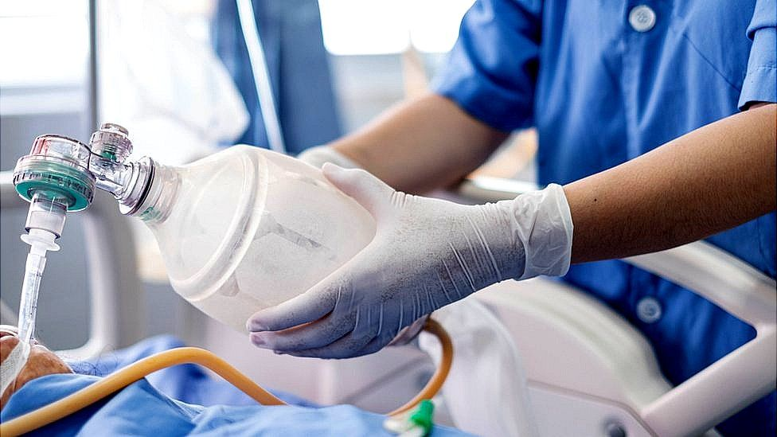

A tribute to some of the doctors who died from COVID-19
The global COVID-19 death toll stands at more than 1·3 million. Among the lives lost have been those of health-care workers, who have had crucial roles throughout the response and continue to serve at the front lines. At the outset of the pandemic, doctors warned of the potential implications of the virus. As the virus spread, many doctors provided treatment for a disease they little understood, while others contributed to accelerated research on potential treatments and vaccines. And as the COVID-19 pandemic worsened worldwide, health professionals worked tirelessly to provide care for patients—some even emerged from retirement to provide assistance.
It is not possible to honour all of the health workers who have died from COVID-19, but in telling the stories of a few of the health professionals from different specialties and various countries who lost their lives to the disease, these short obituaries serve as a tribute to the many other health workers who have died in the pandemic. These lives are also a reminder of the ongoing dedication and service of those who continue to care for patients at a time when COVID-19 cases and deaths are increasing in many countries.
Tap to • View related content for this article
Coronavirus: Doctors face agonising life-death decisions

Doctors are being told that, as the coronavirus pandemic spreads, they will face "agonising choices" over who gets potentially life-saving treatments.
The British Medical Association has issued ethical guidance for those working on the front line.
The professional body says there needs to be an urgent public debate about the issue in these "unprecedented times".
It warns that despite "heroic efforts" to boost capacity, the NHS may be overwhelmed.
The government has ordered thousands of ventilators to help ease the pressure on hospitals caused by the coronavirus crisis.
These, along with specialist life-support machines called ECMO (Extra Corporeal Membrane Oxygenation), will be needed for the sickest patients to aid breathing and, when possible, save lives.